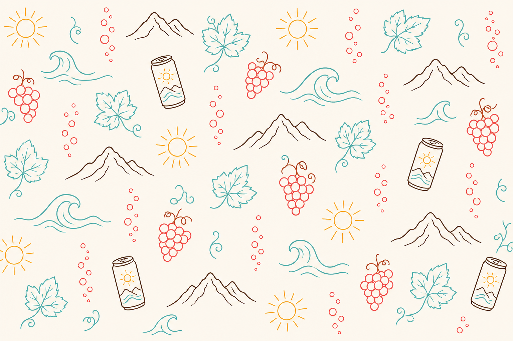
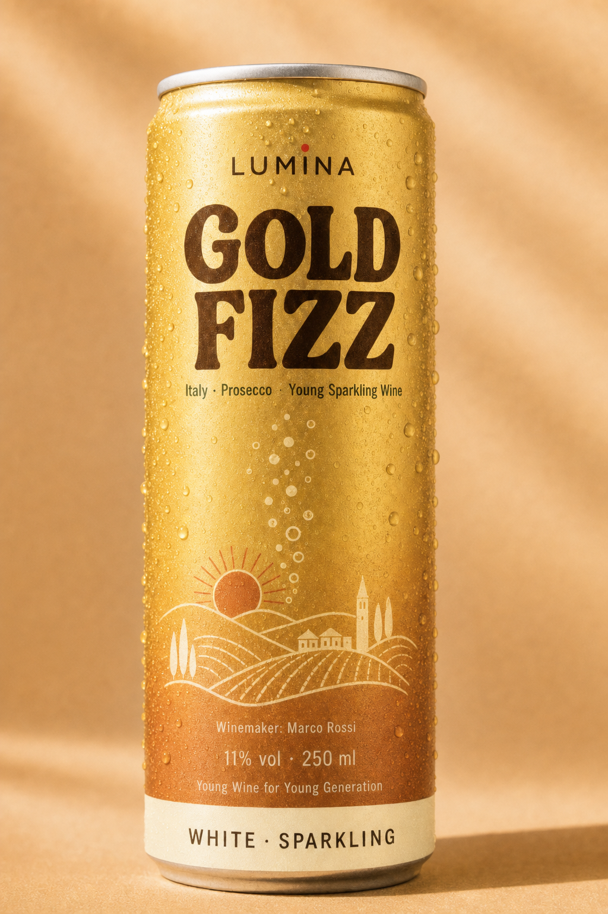
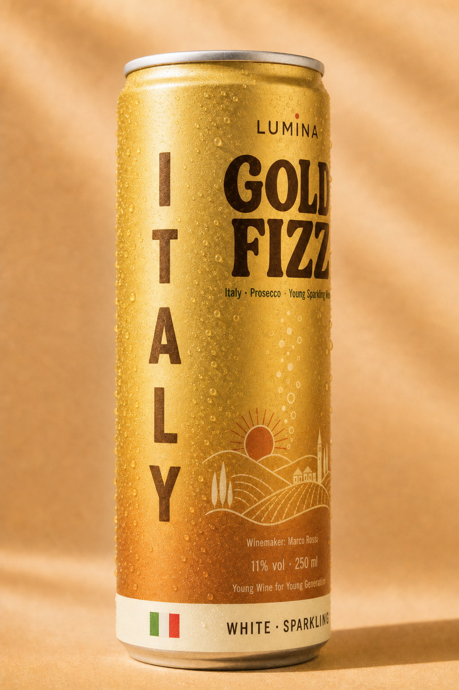
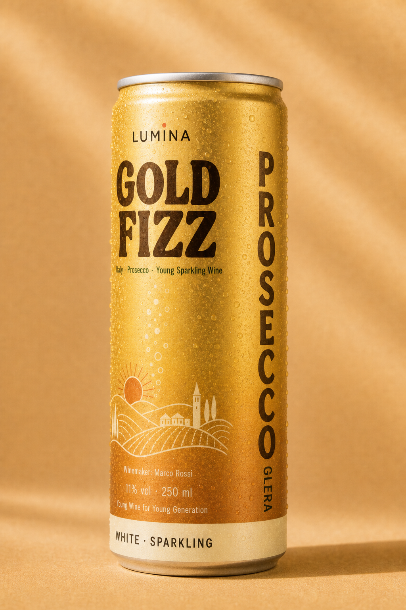
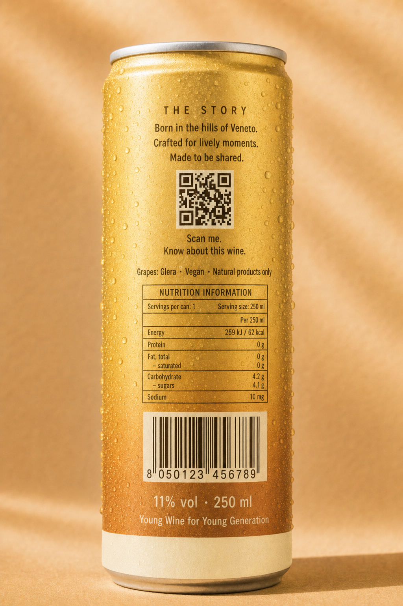
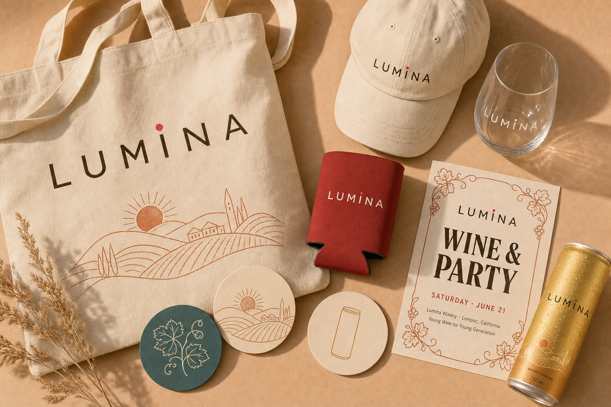

How Lumina looks, speaks, and shows up: on cans, at parties, and everywhere else. Young Wine for Young Generation.
Version 1.0 · July 2026 · Prototype
01 · Brand story
Wine left the bottle
The problem. Wine lives behind corks, cellars, and vocabulary that scares people away.
Our generation drinks at rooftops, marathons, beaches, and unexpected fridge-raid parties. Bottles were never built for that.
The answer. Lumina puts real wine from small wineries into cans with simple names.
Natural products only. The winemaker's name on the front, their story behind a QR code on the back.
One great sort from every wine country: the whole wine world in your can.
The personality. Sunny, social, and honest. Lumina is the friend who brings the good wine and never lectures you about it.
02 · Logo
The grape over the I
The logo is the letterspaced LUMINA wordmark, exactly as printed on every can, with one quiet wine signal: a single round grape in Crush red sitting as a dot above the letter I. Nothing else is added to it.
Primary lockup: wordmark with grape dot, slogan below in small letterspaced capitals.
Wordmark: grotesque capitals, wide letter-spacing (about 0.2em), never bold-heavy. It stays quieter than the wine name.
Grape dot: always Crush (#FF3B5C), always a perfect circle, sized like a letter dot, never larger.
Clear space: keep at least the height of the "L" free around the logo.
Colors: Ink brown on light backgrounds, Cream on dark backgrounds or photos. The grape dot stays Crush in both.
Never stretch, rotate, add shadows, enlarge the wordmark to hero size, or swap the grape for another icon.
03 · Color
Warm California, cold can
The core palette is warm and sunlit. Crush is the action color: buttons, highlights, the sun in the logo. Ink replaces black everywhere.
Cream#FFF6EC · backgrounds
Sand#FFE4CC · warm surfaces
Crush#FF3B5C · action, accents
Gold#FFC857 · sun, highlights
Mint#5FD4C8 · fresh details
Ink#2A1810 · all text
Can colors
Every wine owns one color, taken from its land. Can colors are for packaging and product pages only, never for interface elements.
Gold Fizz#F0C75E · Italy
Green Pulse#2A9D8F · Spain
Island Light#4CC9F0 · Greece
Amber Night#8B1E3F · Georgia
Coast Line#FF6B6B · California
Sunset Crush#C45C26 · France
River Fizz#90BE6D · Portugal
High Altitude#6A0572 · Argentina
Steppe Spark#1D3E8A · Ukraine
Wild Cape#F5E6C8 · South Africa
04 · Typography
Loud names, calm sentences
Display · Bricolage Grotesque 700–800
Gold Fizz for the dance floor
Body · Manrope 400–600
Body text is Manrope: friendly, readable, never shouting. Use it for stories, descriptions, buttons, and everything longer than five words.
Display for can names, headlines, and event posters. Tight letter-spacing (-0.03em), weight 700 or 800.
Body for everything else. Never use display face for paragraphs.
Case: sentence case in text, capitals only for tiny labels (like "YOUNG WINE FOR YOUNG GENERATION").
05 · Illustration & graphics
The land, in one line
Every wine's homeland is drawn in thin single-weight line illustrations: hills, waves, mountains, vines, suns.
Line color is cream or gold on colored cans, and palette colors on cream backgrounds. No gradients inside illustrations, no photorealism, no clip art.

Pattern is for wrapping paper, box interiors, event walls, and social backgrounds. Keep it airy, never crop it tight.
Motifs must belong to a real place: Santorini houses for Greece, qvevri for Georgia, wheat and sunflowers for Ukraine.
Photography style: golden hour, real people 21 to 35, movement and laughter. No staged studio smiles, no formal tastings.
06 · Packaging
Anatomy of the can

Front
Top to bottom: LUMINA wordmark with grape dot, wine name in display face, country line, land illustration, winemaker name, volume line, slogan, and the wine color base band. No QR code on the front, it lives on the back.

Left side · where it's from
Turn the can left: the country of origin in upright stacked capitals, with the national flag (12 × 8 mm) centered in the wine color band. The flag is the only element allowed outside the brand palette.

Right side · what it is
Turn the can right: the real wine name (PROSECCO) with the grape (GLERA) beside it, rotated 90° clockwise like a book spine. The color band stays plain here.

Back
The story in three lines, one single QR with the caption "Scan me. Know about this wine.", grapes and natural-products line, nutrition table, recycling marks, barcode. The QR appears once per can, on the back only.
Front side placement rule
The Lumina can: Ø 53 mm, 151 mm tall, printable label height 138 mm. All schemes below are measured directly from the approved Gold Fizz prototype and drawn at its exact proportion (height = 2.85 × diameter), so what you see here is what prints. Zones are given both as a share of the label height and in millimeters.
Universal front placement scheme, drawn at the exact prototype proportion: Ø 53 mm × 151 mm, printable label height 138 mm. Zone 1 detail, measured from the Gold Fizz can: LUMINA starts 10 mm below the label top, cap height 3.5 mm, wordmark ≈ 26 mm wide, and 5 mm of clear space before the wine name. One QR per can, back only.
Zone
Content
Type & size
Color
1 · Brand top 14% · 19 mm
LUMINA wordmark with grape dot over the I. Nothing else in this zone. Starts 10 mm below label top, 5 mm clear space below before the wine name.
Letterspaced grotesque capitals, cap height 3.5 mm, wordmark ≈ 26 mm wide. Never enlarged.
Ink on light cans, Cream on dark cans. Grape dot always Crush.
2 · Wine name 14–38% · 33 mm
Wine name only, one or two words, stacked one word per line.
Display face 800, cap height ≈ 14 mm per line, spanning ≈ 80% of can width. The loudest element on the can.
Ink on light cans, Cream or Gold on dark cans.
3 · Origin line 38–42% · 6 mm
Country · Grape · Style (e.g. "Italy · Prosecco · Young Sparkling Wine").
Body face 600, cap height ≈ 2.5 mm, single line, centered.
Same as wine name, at 90% opacity.
4 · Land illustration 42–78% · 50 mm
Thin-line landscape of the wine's homeland. Real place motifs only.
Single-weight line, no fills except sun. Breathing room above and below.
Cream and Gold lines on colored cans, palette lines on light cans.
5 · Winemaker 78–83% · 7 mm
"Winemaker: First Last". Always credited, no exceptions.
Body face 600, cap height ≈ 2.2 mm, centered.
Matches origin line.
6 · Volume & slogan 83–92% · 12 mm
"XX% vol · 250 ml" and below it "Young Wine for Young Generation". No QR code here.
Body face 500, volume cap ≈ 2.5 mm, slogan cap ≈ 1.8 mm.
Matches origin line.
7 · Wine color band bottom 8% · 11 mm
Dipped base band naming the wine color and style: "WHITE · SPARKLING", "RED · STILL", "ROSÉ · SPARKLING". Never "with gas". The band wraps the full can.
Letterspaced capitals, cap height ≈ 3 mm, centered in the band.
Band: Straw #F7EDD3 for white, Ruby #7A1028 for red, Rosé #F4A6B4 for rosé. Text: Ink on light bands, Cream on Ruby.
One QR per can, on the back only, captioned "Scan me. Know about this wine."
Zone discipline: content never crosses zone borders. If a name needs three lines, shorten the name.
The color band is functional, not decorative: its color always matches what is inside the can.
Hierarchy from a distance: 3 meters away you see the can color and wine name; 1 meter away the country and color band; in hand, the winemaker and slogan.
Side panels placement rule
The can has four faces: front, left, right, back. Turn the can left and the left panel tells you where the wine is from. Turn it right and the right panel tells you what the wine is. Same zones on every Lumina can.
Universal side panels scheme, same proportion as the front. Left panel: country of origin in upright stacked capitals with the national flag (12 × 8 mm) centered in the wine color band. Right panel: the real wine name (e.g. PROSECCO) in display capitals with the grape (e.g. GLERA) beside it, both rotated 90° clockwise like a book spine.
Element
Content
Type & size
Color
Left · Country 25–110 mm
Country of origin only, one word per can (e.g. ITALY, GEORGIA). Letters upright, stacked, read top to bottom, centered on the panel.
Letterspaced grotesque capitals 700, cap height ≈ 7 mm per letter. Long names (ARGENTINA) tighten spacing, never shrink below 5 mm.
Ink on light cans, Cream on dark cans.
Left · Flag in color band
National flag of the wine's country, the only full-color element outside the palette.
12 × 8 mm, horizontally centered in the wine color band.
True flag colors. Never tinted, never enlarged.
Right · Wine name 24–115 mm
The real wine name: PROSECCO, SAPERAVI, ALBARIÑO. Not the Lumina product name.
Display face 800, cap height ≈ 9 mm, rotated 90° clockwise, reads top to bottom.
Ink on light cans, Cream on dark cans.
Right · Grape 24–115 mm
The grape variety beside the wine name (e.g. GLERA). If wine and grape share a name, the second line reads the region instead (e.g. KAKHETI).
Letterspaced grotesque 600, cap height ≈ 4 mm, same rotation, top-aligned with the wine name.
Same as wine name, at 90% opacity.
Back side placement rule
The back is the reading side: the story, the single QR code, and the legal facts. Eight zones, same measurement system as the front.
Universal back placement scheme, same proportion. The story in three short lines, one QR code (24 × 24 mm) captioned "Scan me. Know about this wine.", grapes and natural-products line, nutrition table, recycling marks, barcode, volume and slogan. The wine color band wraps around from the front and stays plain on the back.
Orientation: left panel letters are upright and stacked; right panel text is rotated 90° clockwise. Both read top to bottom when the can stands.
The flag is the exception: it is the only element allowed outside the brand palette, and it only ever appears on the left panel, inside the color band.
Universal for new wines: a new wine needs exactly six decisions: can color, wine name, land illustration, country + flag, wine + grape, winemaker. Every position is already fixed by these schemes.
The lineup
Every wine gets its own row: the front label, a live 3D can (grab it and spin it 360°), and the land illustration from the middle of the label, up close.
New wines follow the same template: one country color, one land illustration, name of two short words.
Names must be sayable after two cans: no château, no vintage jargon.
Winemaker is always credited on the front. No exceptions.
07 · Voice
Talk like a friend, not a sommelier
We say
"Bubbles for dancing."
"Cold cans, loud nights."
"Tell Samiklie what you like. He finds your wine."
We never say
"Notes of brioche with a lingering minerality."
"An exquisite oenological experience."
"For the discerning connoisseur."
Short sentences. If it needs a comma, try cutting it in two.
Concrete over clever: name the place, the grape, the moment.
Samiklie speaks casually, asks about the night, and always ends with one clear pick.
08 · Applications
Everything else we make
Merch, event materials, and digital follow one rule: cream base, one land illustration, one loud display headline, palette colors only.

Events: posters lead with "WINE & PARTY" in display face, date in Crush, pattern as the border.
Merch: natural materials (cotton, paper, glass), printed in maximum two palette colors plus ink.
Wine Tree: updates use golden-hour vineyard photos with the sponsor's vine name in display face.
Digital: the website and app use this exact palette and type. Product pages may use the wine's can color as an accent.
Lumina Brand Book v1.0 · Stanford Startup Education, Module 2 prototype · All product imagery is concept work.